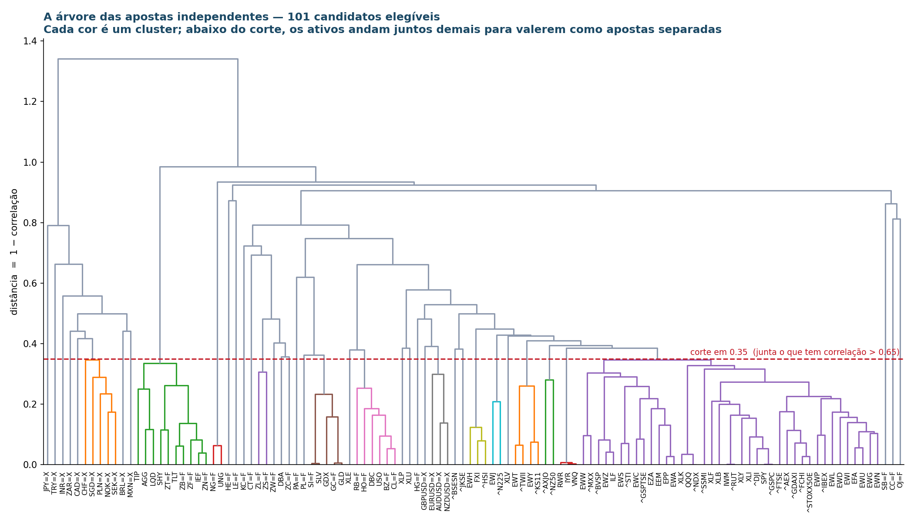
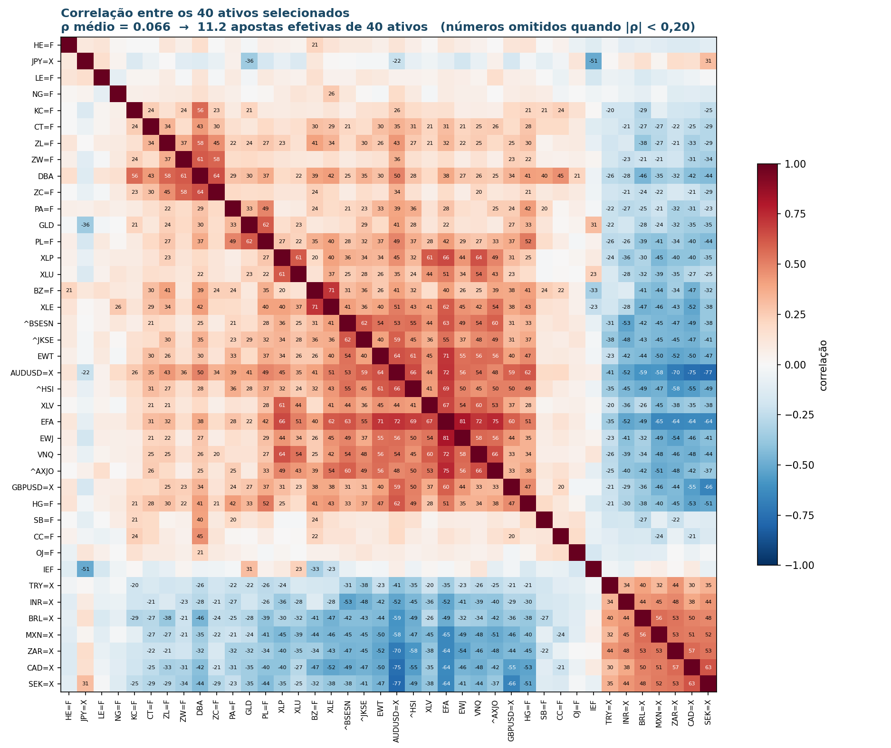
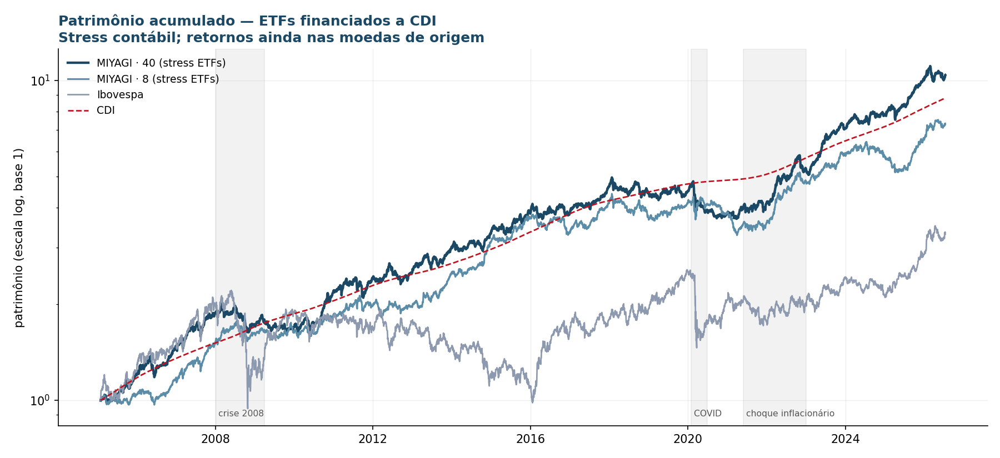
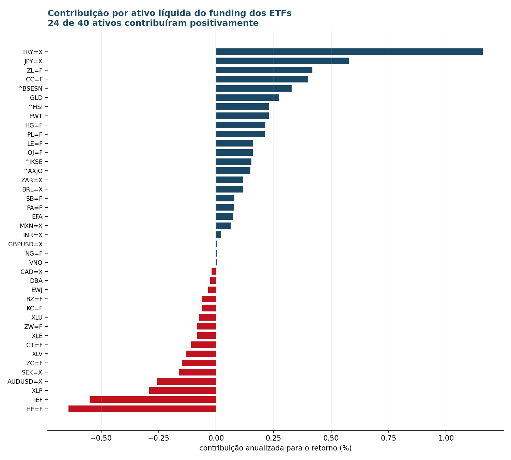

Robô de tendência multi-ativo com alvo de risco · Desafio Quant AI 2026
"Não prevê o golpe. Observa o movimento — e responde com técnica."
Mercados sub-reagem à informação e tendências duram meses. O Miyagi não tenta adivinhar o futuro: identifica para onde cada mercado já está andando e vai junto — comprado no que sobe, vendido no que cai — com controle de risco em primeiro lugar.
Números com proxy de carry cambial e os 11 ETFs de
Adjusted Close financiados a CDI. Como os retornos permanecem nas
moedas de origem, o 0,13 é um stress contábil reproduzível, não retorno
implementável em reais. O overlay homogêneo dá Sharpe 0,48 e permanece apenas
como estimando histórico de pesquisa.
A previsão original não foi confirmada. O commit
88392ef registrou Sharpe 0,65; o realizado daquela etapa foi 0,48,
fora da banda de ±0,10. Recalcular a fórmula depois da correção de dados é uma
verificação de consistência pós-hoc, não uma nova previsão independente.
Limite de validade. O funil histórico usou correlações e elegibilidade até 2026. Portanto 2005–2026 não é integralmente fora da amostra. A seleção anual defasada só pode começar em 2016 e produz Sharpe 0,34 no overlay e 0,06 com ETFs financiados; os dados públicos ainda não têm vintages arquivados.
O que precisa aparecer no relatório de 5 páginas: o buraco de 2016–2020 e a dependência residual da lira. Um avaliador que fatiar o período ou olhar contribuição por ativo encontra os dois em minutos — muito melhor que venham de nós.
| Etapa | O que era | Desfecho |
|---|---|---|
| Seleção de universo | funil 26 → 8 ativos | mantido como base |
| MARÉ | reversão à média em resíduos de PCA (S&P 500) | descartado |
| MIYAGI v1 | trend following, 8 ativos, 12-1 fixo | Sharpe 0,41 |
| MIYAGI v2 | horizonte adaptativo (walk-forward) | Sharpe 0,51 |
| MIYAGI v3 | universo expandido, 40 ativos, 12-1 fixo | Sharpe 0,60 (inflado) |
| MIYAGI v4 | v3 com proxy de carry cambial | Sharpe 0,48 (overlay) |
| MIYAGI v5 | v4 com stress de financiamento dos ETFs | Sharpe 0,13 (auditado; não implementável) |
Auditoria encontrou um vazamento temporal: a última carteira de um período continuava rendendo até o fim de todo o histórico. Um teste de fronteira provou — pedimos 6 meses de backtest (jan–jun/2008) e recebemos 18 anos.
Corrigido o bug, a série ativa (MARÉ − SPY) tem Sharpe +1,008
no design e −0,698 na validação. Não é o sinal enfraquecendo: é
ele invertendo, com significância nos dois sentidos. Uma auditoria independente
(robertopinca/MecaQuant_V2) testou a mesma construção com
pré-registro e obteve 0 de 24 células confirmadas.
Prêmio documentado em 58 mercados e um século de dados (Moskowitz, Ooi & Pedersen 2012; Hurst, Ooi & Pedersen 2017).
| Decisão | Regra | Origem |
|---|---|---|
| Sinal | retorno acumulado de 12 meses ignorando o último mês; positivo → comprado, negativo → vendido | Moskowitz et al. (2012) |
| Tamanho | peso ∝ 1 / volatilidade (janela de 60 dias) | convenção da literatura |
| Defesa | carteira escalada para volatilidade alvo de 10% a.a.; alavancagem ≤ 3× | padrão de managed futures |
| Execução | rebalanceamento mensal no fechamento; custo de 0,1% sobre o negociado | premissa declarada |
| Caixa | rende CDI no patrimônio; o stress cobra CDI da exposição líquida nos ETFs de retorno total | convenção simplificada |
Por que ignorar o último mês? No curtíssimo prazo os preços tendem a "quicar" de volta — o efeito contrário ao que se quer capturar. Incluí-lo adicionaria ruído. É tão padrão que tem nome: sinal "12-1".
Zero grid search. Nenhum parâmetro foi escolhido por dar o melhor resultado. Quando os testes mostraram configurações superiores (horizonte 9-1 daria 0,68; janela de 20 dias daria 0,61; teto de 5× daria 0,63), nenhuma foi adotada. A configuração base perde em três de três dimensões testadas — o que é evidência verificável de que os valores vieram da literatura, não dos dados.
O pool original tinha 42 candidatos e uma lacuna grave: commodities apareciam quase só como cesta (DBC). Mas petróleo, cobre, café e boi têm ciclos próprios de oferta e demanda — uma cesta funde tudo numa aposta só e joga fora a diversificação. Foram acrescentados 20 futuros de commodities individuais, 4 futuros de Treasury, índices de bolsa em moeda local e mais pares de câmbio.
| Classe | n | Tickers |
|---|---|---|
| Índices de bolsa moeda local | 23 | ^GSPC ^NDX ^RUT ^DJI ^BVSP ^GDAXI ^FTSE ^FCHI ^STOXX50E ^IBEX ^SSMI ^AEX ^N225 ^HSI ^KS11 ^TWII ^AXJO ^NZ50 ^BSESN ^JKSE ^STI ^MXX ^GSPTSE |
| ETFs de ações dólar | 25 | SPY QQQ IWM EFA EEM EWZ EWJ EWG EWU EWY EWT EWA EWC EWW EWH EWS EWL EWD EWN EWP EWI EPP ILF EZA FXI |
| Setores EUA | 9 | XLF XLK XLI XLP XLY XLB XLE XLU XLV |
| Juros e crédito | 10 | ZT=F ZF=F ZN=F ZB=F SHY IEF TLT TIP LQD AGG |
| Câmbio | 16 | BRL=X EURUSD=X JPY=X GBPUSD=X AUDUSD=X CAD=X CHF=X MXN=X NZDUSD=X SEK=X NOK=X ZAR=X SGD=X INR=X TRY=X PLN=X |
| Commodities | 28 | GC=F SI=F HG=F PL=F PA=F CL=F BZ=F NG=F HO=F RB=F ZC=F ZS=F ZW=F ZL=F KC=F SB=F CC=F CT=F OJ=F LE=F HE=F GLD SLV DBC USO UNG DBA GDX |
| Imobiliário | 3 | VNQ IYR RWR |
114 de 114 tickers retornaram dado. Destes, 101 têm histórico até 2003, suficiente para começar o backtest em 2005 (13 ficaram de fora do funil por histórico curto: VNQ, FXI, GLD, TRY=X, DBC, USO, SLV, AUDUSD=X, GDX, DBA, ^STOXX50E, UNG, BZ=F — alguns entram no backtest depois, quando acumulam 12 meses de dados).
Limitação declarada: séries de futuros contínuos do Yahoo
(sufixo =F) têm descontinuidade na rolagem de contrato. Para
horizonte mensal o efeito é de segunda ordem, mas existe e não foi corrigido.
A tese do Miyagi é diversificação. A relação que a sustenta:
Sharpe ≈ IR × raiz(nº de apostas INDEPENDENTES)
Oito ativos que andam sempre juntos valem uma aposta só. O funil existe para transformar candidatos correlacionados em apostas genuinamente distintas.
D = 1 − ρA regra do representante é cega a retorno. Esse é o ponto onde o viés entraria mais facilmente ("fico com o que rendeu mais"). Retorno, Sharpe e desempenho não entram em nenhuma etapa da seleção.

| ativos | ρ médio | apostas efetivas | |
|---|---|---|---|
| universo original | 8 | 0,020 | 7,0 |
| universo expandido | 40 | 0,065 | 11,3 |
Os 40 selecionados:
AUDUSD=X BRL=X BZ=F CAD=X CC=F CT=F DBA EFA EWJ EWT GBPUSD=X GLD HE=F HG=F IEF INR=X JPY=X KC=F LE=F MXN=X NG=F OJ=F PA=F PL=F SB=F SEK=X TRY=X VNQ XLE XLP XLU XLV ZAR=X ZC=F ZL=F ZW=F ^AXJO ^BSESN ^HSI ^JKSE
Do universo antigo, ^BVSP, SPY, EURUSD=X e DBC não sobreviveram — foram absorvidos por clusters cujo medoide é outro ativo. A exposição a Brasil permanece via BRL=X.

git clone https://github.com/brunoberenguerr/MIYAGI.git && cd MIYAGI python -m venv .venv && .venv\Scripts\activate pip install -r requirements.txt # pipeline reproduzível: usa os CSVs congelados no repositório python resultado_final.py # OVERLAY E STRESS FINANCIADO # diagnosticos python robustez.py --universo 40 python robustez.py --universo 40 --financiamento etfs python auditoria_financiamento.py python auditoria_lag_carrego.py python analise_periodos.py --financiamento etfs python treino_parametros.py --financiamento etfs python figuras_relatorio.py # dendrograma, matriz, ordens # reconstrução opcional: baixa dados atuais, sem vintages python expandir_pool.py python carrego.py
O motor "rebobina a fita" de 2005 a 2026, mês a mês, fingindo não saber o futuro. A cada fim de mês:
# 1. o sinal — para onde cada ativo está andando? retorno_12m_menos_1m = preco[t-1mes] / preco[t-13meses] - 1 sinal = +1 se positivo (comprado) | -1 se negativo (vendido) # 2. o tamanho — ativo calmo recebe mais, ativo nervoso recebe menos peso_bruto = sinal / volatilidade_60dias # 3. a defesa — escala a carteira para 10% de risco ao ano fator = 10% / volatilidade_estimada_da_carteira # w'Σw peso = peso_bruto × min(fator, 3x / exposicao) # 4. o custo — 0,1% sobre o que mudou desde o mês passado custo = |peso_novo - peso_antigo|.soma() × 0,1% # 5. carrega as posições; soma CDI uma vez e cobra funding dos ETFs
>, não >=). Na vida real você decide no
fechamento e a posição só passa a valer depois.Um erro real que isso não pegou. A primeira versão deste código tinha ~290 datas por ano em vez de ~252 (o câmbio negocia em dias sem pregão na bolsa). Isso inflava o CDI, subestimava a volatilidade e fazia o robô se alavancar demais. Foi detectado porque uma linha de diagnóstico dizia "24,7 anos" para um período de 21,5. O calendário oficial passou a ser o de dias úteis do CDI.
| CAGR | Vol | Sharpe* | t | Max DD | |
|---|---|---|---|---|---|
| 40 ativos · overlay histórico | 15,7% | 10,5% | 0,48 | 2,20 | −24,0% |
| 40 ativos · ETFs financiados | 11,5% | 10,5% | 0,13 | 0,59 | −25,8% |
| 8 ativos · ETFs financiados | 9,7% | 10,8% | −0,03 | −0,13 | −25,8% |
| Ibovespa | 9,7% | 25,7% | 0,09 | — | −60,0% |
| CDI | 10,7% | 0,2% | — | — | 0,0% |
* Sharpe do excesso sobre o CDI. Período 2005–2026 (21,5 anos), 259 rebalanceamentos, exposição média 2,5×, volatilidade realizada de 10,5% contra alvo de 10%.
Não há evidência estatística no cenário financiado. O t IID é 0,59, p bilateral 0,558 e os t Newey–West ficam entre 0,51 e 0,58. Todos os intervalos bootstrap incluem zero com folga. Isso não torna o stress uma carteira em reais: FX, roll, dividendos ausentes e custos por instrumento continuam fora do painel.


Foi este gráfico que revelou um erro de modelagem. Na versão original, TRY=X sozinha contribuía 1,92% ao ano — quatro vezes o segundo colocado. Uma concentração dessas em 1 de 40 ativos não fazia sentido econômico, e a investigação encontrou a causa.
O modelo usava apenas a variação do preço à vista das moedas. Mas para ficar comprado em USD/TRY (vendido em lira) é preciso tomar lira emprestada e pagar a taxa de juros turca — que chegou a 40–50% ao ano em 2023–2025, contra 0–5,5% nos EUA. Esse custo nunca era cobrado.
A paridade coberta de juros liga o diferencial ao preço a termo. A paridade descoberta é hipótese sobre desvalorização esperada, não uma identidade. Os resultados abaixo vêm dos proxies de taxas usados no projeto e não são apresentados como confirmação de uma lei econômica.
Antes de concluir por erro de modelagem, a série foi auditada: USD/TRY de 1,34 para 47,10 é real; os saltos batem com eventos históricos (crise cambial de agosto/2018, política de juros de dezembro/2021); volatilidade de 16% a.a. é plausível; 0,9% de preços repetidos. Não havia erro de dados nem de código.
Séries do FRED (IMF/IFS). Cada par virou um índice de retorno
total aproximado: retorno_total = retorno_do_preço + carrego, com
carrego = (juro_USD − juro_estrangeiro)/252 para pares USD/XXX.
| Par | só preço | com carrego | diferença |
|---|---|---|---|
| TRY=X | +18,0% | −1,6% | −19,6 p.p. |
| BRL=X | +2,5% | −10,3% | −12,8 |
| ZAR=X | +4,3% | −0,7% | −5,0 |
| MXN=X | +1,9% | −2,8% | −4,7 |
| INR=X | +3,4% | −1,5% | −4,9 |
| JPY=X | +1,8% | +3,3% | +1,6 |
Os proxies produzem sinal oposto no iene: como os juros japoneses eram menores que os americanos, ficar comprado em USD/JPY recebe carry nesse modelo. Isso é consequência da fórmula aplicada, não confirmação empírica da paridade de juros.
Limitação declarada: G10 (AUD, CAD, GBP, SEK, EUR) não tem série pública completa no FRED e ficou sem correção. O diferencial dessas moedas contra o dólar é de 0–5 p.p., ordem muito menor que o da lira, mas o erro residual existe.
| Universo | sem carrego | com proxy de carry |
|---|---|---|
| 8 ativos | 0,41 (t=1,88) | 0,36 (t=1,64) |
| 40 ativos | 0,60 (t=2,78) | 0,50 (t=2,30) |
Na convenção de overlay daquela etapa, a expansão elevou o Sharpe de 0,36 para 0,50. A auditoria posterior de deriva e calendário leva o overlay a 0,48, e a auditoria de financiamento dos ETFs leva o stress a 0,13; portanto 0,50 não é o veredito econômico final.
A metodologia registrada em 88392ef era escalar o Sharpe pela raiz
das apostas efetivas. Aplicada à base com proxy de carry:
previsto = 0,36 × raiz(11,2 / 7,0) = 0,455
realizado = 0,50
erro = +0,045 com insumos alterados depois do registro
Isso não é confirmação independente. A previsão original (0,65) usava o walk-forward e o realizado daquela etapa foi 0,48, fora da banda de ±0,10. A conta acima reutiliza a fórmula com insumos conhecidos depois.
| Universo | Sharpe | t |
|---|---|---|
| completo (40 ativos) | 0,50 | 2,30 |
| sem TRY=X | 0,41 | 1,89 |
| sem todos os câmbios emergentes | 0,40 | 1,87 |
| sem câmbio nenhum | 0,43 | 1,97 |
A dependência da lira caiu pela metade — o impacto de removê-la passou de −0,18 para −0,09. Ela segue como maior contribuidora (+1,08% a.a. contra +1,92% antes), mas o segundo colocado agora está próximo (JPY=X, +0,62%), e não a 4× de distância. Mesmo sem nenhuma moeda, o universo de 40 rende 0,43 — acima dos 0,36 do universo de 8.
Por que TRY=X permanece no universo. Foi selecionada pelo funil mecânico, por correlação, antes de qualquer backtest. Removê-la agora porque sabemos que rendeu bem seria overfitting ao contrário — a mesma falha metodológica com o sinal invertido. Ela fica, com o proxy de carry aplicado e suas limitações reportadas ao lado.
Uma ordem é a mudança do peso derivado pré-trade para o novo alvo. A lista
completa está em resultados/ordens_completas.csv (10.200 linhas com
data, ativo, lado, tamanho, peso final e posição resultante).
25 compradas, 15 vendidas, exposição bruta 3,00× (no teto). A maior posição
comprada é CAD=X (+0,229); a maior vendida é TRY=X (−0,614). A tabela integral,
gerada pelo mesmo cenário financiado usado nas figuras, está em
resultados/carteira_atual.csv. Não se mantém uma cópia manual aqui
para evitar divergência entre relatório e motor.
Critérios declarados antes da execução, para que não fosse possível olhar o resultado e inventar o critério que ele satisfaz.
| # | Teste | Critério | Overlay | ETFs financiados |
|---|---|---|---|---|
| A | Custos | superar o CDI com o dobro do custo | ok | falha |
| B | Janela de volatilidade | Sharpe ≥ 0,25 de 20 a 250 dias | ok | mín. 0,07 |
| C | Sub-períodos | superar o CDI em 3 dos 4 blocos | 3/4 | 3/4 |
| D | Teto de alavancagem | com teto 2×, superar o CDI | ok | ok |
| E | Jackknife | Sharpe ≥ 0,25 retirando qualquer bloco | 0,41 | 0,00 |
| F | Horizonte do sinal | positivo em 3 dos 4 horizontes | 4/4 | 3/4 |
O jackknife foi feito por classe. No cenário financiado, reprovam custos, janela de volatilidade e jackknife. O dobro do custo reduz o CAGR a 10,2%, abaixo do CDI de 10,7%.
| Período | Sharpe (ETFs financiados) | CAGR | CDI | Superou? |
|---|---|---|---|---|
| 2005–2010 | 0,16 | 14,3% | 12,9% | sim |
| 2011–2015 | 0,17 | 11,8% | 10,4% | sim |
| 2016–2020 | −0,68 | 0,1% | 7,8% | não |
| 2021–2026 | 0,76 | 19,6% | 11,3% | sim |
2016–2020 é a fraqueza persistente: mais ativos, horizonte adaptativo e as variações testadas não a removeram. O proxy de carry levou o Sharpe do bloco de −0,23 para −0,45 no overlay; o funding dos ETFs o leva a −0,68.
| Período | Trocas de direção/ano | Duração média da tendência |
|---|---|---|
| 2005–2010 | 7,8 | 12,3 meses |
| 2011–2015 | 12,2 | 7,9 meses |
| 2016–2020 | 12,0 | 8,0 meses |
| 2021–2026 | 10,9 | 8,8 meses |
O sinal olha 12 meses para trás, e tendências estimadas mais curtas podem torná-lo mais exposto a reversões. Esta tabela, porém, usa o universo de 8 ativos; o resultado principal usa 40. Além disso, duração e desempenho vêm do mesmo painel. A associação é descritiva e não identifica a causa do bloco ruim.
| Hipótese | Teste | Veredito |
|---|---|---|
| O resíduo do MARÉ carrega estrutura setorial | correlação intra vs. entre setores | refutada — a PCA já remove 97,7% |
| A divergência do MIYAGI vem do estimador de volatilidade | janela de 60 dias vs. EWMA | refutada — −20,4% vs −20,3% |
| A queda pós-2016 é decaimento pós-publicação | Sharpe antes vs. depois de 2012 | refutada — pós foi melhor (0,43 vs 0,35) |
| Adaptar o horizonte ajuda no universo grande | walk-forward em 40 ativos | refutada — 0,48 contra 0,60 do fixo |
Por que o walk-forward deixou de ajudar: adaptar horizonte e diversificar ativos são substitutos, não complementos. Ambos defendem contra depender de um único regime de tendência. Com 40 ativos espalhados, sempre há algum mercado em tendência longa — e a troca de horizonte vira giro sem ganho.
Foram testadas quatro combinações de universo × parametrização. Com erro-padrão do Sharpe de ~0,22 em 21 anos, o intervalo observado (0,41 a 0,60) é compatível com o que puro ruído produziria ao se escolher o máximo de quatro tentativas. A tabela completa das quatro células está no repositório justamente para que ninguém precise adivinhar quantas foram testadas.
Detalhamento completo em ia_log.md.
Critério 6 do edital = 15% da nota.
Foi revisão adversarial. Em cinco ocasiões a IA encontrou erros que produziam números plausíveis e errados — o tipo mais perigoso, porque não quebra nada e não aparece em teste.
| Erro encontrado | Impacto |
|---|---|
| Carrego cambial ignorado no modelo original da equipe |
Lira turca parecia render +18% a.a.; com juros, rende −1,6%. Sharpe inflado de 0,50 para 0,60. |
| CDI somado a ETFs financiados encontrado na revisão por pares |
O overlay dá Sharpe 0,48; cobrar CDI da exposição líquida nos 11 ETFs reduz para 0,13. |
| Vazamento temporal no backtest do MARÉ | 49% da série de "design" era, na verdade, validação. Levou ao abandono da estratégia. |
| Erro de calendário no MIYAGI no código que a própria IA escreveu |
CDI subestimado de 10,68% para 9,21%; Sharpe inflado em ~0,14. |
| Limite de preenchimento aplicado duas vezes encontrado na auditoria final |
Valores imputados renovavam sua própria idade. Corrigir o calendário elevou os dias com exposição sem retorno de 330 para 489. |
| Teste de sanidade que afirmava algo falso | Imprimia "Sharpe 0,41 está na faixa 0,5–1,0" — não está. |
| Rótulos de gráfico fora da área visível | Legendas posicionadas antes das curvas existirem. |
Robustez não corrige a economia do instrumento. O overlay passou 6 de 6 testes com a hipótese de financiamento errada. Depois do encargo dos ETFs, passa 3 de 6. O diagnóstico surgiu da revisão adversarial, não de procurar uma parametrização com Sharpe maior.
O commit 88392ef registra a previsão de Sharpe 0,65 antes da
existência do script de backtest, com os critérios de julgamento declarados
junto. O histórico versionado é evidência útil da sequência de trabalho, mas o
timestamp local do Git não é, sozinho, prova criptográfica independente de
pré-registro.
O relatório de cinco páginas já incorpora a auditoria. A prioridade técnica agora é:
CLAUDE.md desatualizado — ainda lista "VETOR ou
GIRO" como nome do robô.Sobre a narrativa. O edital diz que complexidade não pontua e que "estratégias simples e bem executadas podem obter desempenho superior a estratégias complexas mal justificadas". Temos as duas metades: uma estratégia complexa testada com rigor e descartada, e uma simples submetida ao mesmo escrutínio — com as falhas e a ausência de evidência no cenário financiado reportadas, inclusive contra nosso próprio interesse.